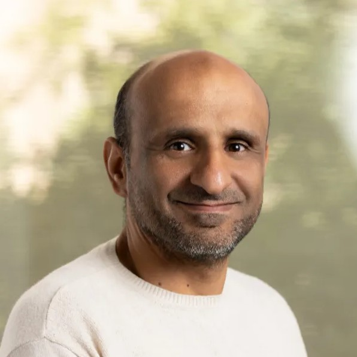

I develop computational and bioinformatics approaches to decode complex kidney diseases through multi-omics data integration, cross-species molecular mapping, and machine learning — translating high-dimensional data into precision medicine insights.
My research bridges computational biology and clinical nephrology, using multi-omics data integration to advance precision medicine for kidney disease.
Developing and applying complementary data integration methods (MOFA, DIABLO) to combine transcriptomics, proteomics, and metabolomics for mechanistic insights into chronic kidney disease progression.
JCI Insight · NEPTUNE · KPMPBuilding computational frameworks (Mouse Map App) to translate between mouse model and human kidney disease signatures, enabling drug target validation and preclinical-to-clinical translation.
RPC2 · 6 Pharma PartnersApplying machine learning algorithms to identify kidney cell types in single-cell and single-nucleus RNA-seq data, improving resolution of disease-specific cellular changes across kidney compartments.
Heliyon · scRNA-seq · snRNA-seqUsing single-cell transcriptomics and network pharmacology to identify repurposing opportunities, including SGLT2 inhibitor mechanisms in diabetic kidney disease and tamoxifen resistance in breast cancer.
Patent Pending · mSystemsOpen-source computational tools for the research community.
Personalized pathway-based classification modeling using metabolomics data. Enables deep learning and traditional ML for disease subtyping.
Infer gene transcription elongation rates with a novel least sum of squares method from Pol II profiling data.
Cross-species molecular mapping tool for translating mouse CKD model signatures to human kidney disease. Used by RPC2 pharma partners for target validation.
Reproducible Jupyter-notebook and R Shiny workflow for analyzing Metabolon metabolomics data. Used in NEPTUNE and ALS research.
39 peer-reviewed articles including 3 in J Clin Invest, 2 in Nature Communications, and publications in Kidney International, JCI Insight, and CJASN.
I organize and lead hands-on data training workshops for clinicians, wet lab researchers, and industry scientists across three continents.
Hands-on training for clinicians and scientists on cellxgene, KPMP Kidney Cell Atlas, and Nephroseq tools at the World Congress of Nephrology.
Trained clinicians and scientists on cellxgene, KPMP Kidney Cell Atlas, and Nephroseq tools for kidney disease research.
Hands-on training for industry scientists on KPMP data tools for kidney research at ASN Kidney Week 2025.
Two-day hands-on training for KPMP consortium investigators on cellxgene, Explorer, Spatial Viewer, DAVE Repository, and Study Participant Atlas.
Organized hands-on workshop for wet lab researchers on subcellular gene expression visualization using 10x Xenium Explorer 3.2.0.
Teaching clinical scientists to use cellxgene VIP for data analysis and visualization of scRNA-seq data since 2020.
I'm always interested in collaborations on computational kidney disease research, multi-omics integration, and precision nephrology.
Department of Internal Medicine — Nephrology
University of Michigan Medical School
Ann Arbor, MI 48109